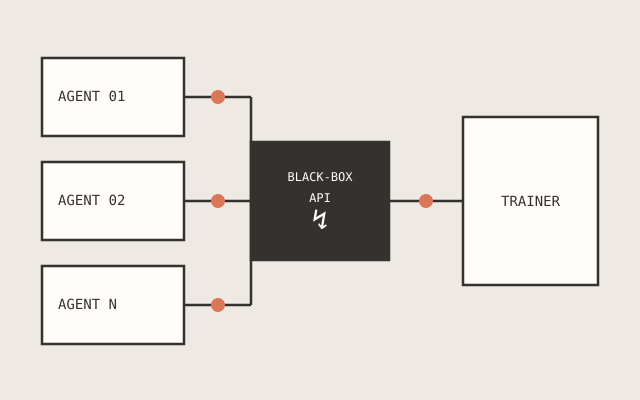
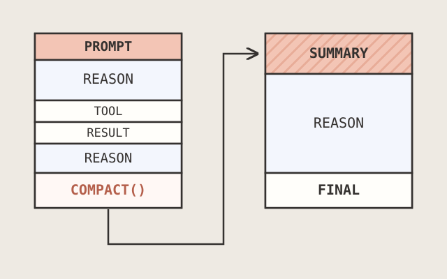
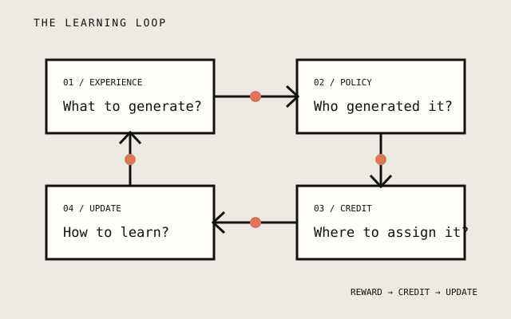

Environment
GUI + CLI + Code
I build real-world environments for computer agents.
I'm Longtao Zheng (郑龙韬), a researcher at Bytedance, working on RL for coding agents. My research focuses on training open-ended and long-horizon agents. I earned my PhD from Nanyang Technological University (NTU) Singapore in 2026, advised by Prof. Bo An. Previously, I received my Bachelor's degree in computer science from University of Science and Technology of China (USTC) in 2022.
My research spans the full stack of open-domain and long-horizon computer agents:
real-world environments, inference-time harnesses, and RL for LLM agents.
GUI + CLI + Code
Long-horizon autonomy
RL self-improvement

A first-principles design for fully asynchronous RL with any agent harness

Teaching coding agents to adaptively compress noisy history into useful context

LLM RL = task distribution + rollout policy + credit assignment + stable policy updates